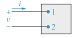
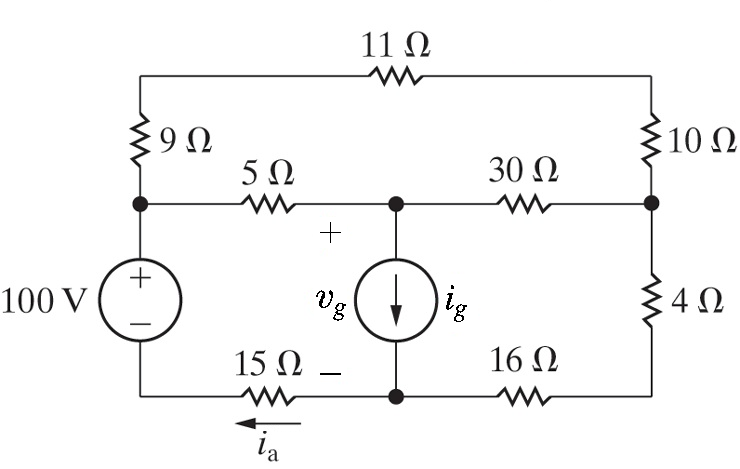

Placa Arduino UNO
Placa Arduino UNOAluno: JOAO MARCELO GONCALVES LISBOA
Observações: A última questão deverá ser feita em dupla (ou individualmente, se necessário) e sua entrega ocorrerá presencialmente.
A corrente nos terminais do elemento de circuito abaixo é dada pela função:
\[ \begin{align*} i = &0, & & t < 0;\\ i = &200e^{-500t}, & & t \geq 0. \end{align*} \]
Qual a carga (em coulombs) que entra no elemento em seu terminal superior?

Considerando as técnicas de cálculo de equivalência de resistências aprendidas durante o 1º módulo da disciplina, simplifique o circuito abaixo e calcule:
Aplique uma transformação \(Y \rightarrow \Delta\) aos resistores na configuração \(Y\) conectados aos terminais \(x, y \text{ e } z \). Mostre os valores calculados para os resistores na configuração \(\Delta\) equivalente.
Com as técnicas de simplificação de resistência aprendidas no I módulo calcule:

Considerando que uma corrente \(i_{a} = -4A\) entra à direita do resistor do resistor de \(15 \Omega\) conectado ao polo negativo da fonte de tensão do circuito, encontre, pela lei de kirchoff da corrente nos nós, pela lei de kirchoff das tensões nas malhas e pelo cálculo das tensões nos elementos de resistência do circuito à partir da lei de Ohm, o sistema de catorze equações que representa este circuito em sua forma matricial.
Insira esta representação matricial em um notebook jupyter (utilize o sympy para representar a matriz) encontre sua forma escada linha reduzida e resolva o circuito com as informações presentes, encontrando ao fim, o valor da corrente \(i_{g}\) da fonte de corrente, bem como, o valor da tensão \(V_{g}\) entre seus terminais.
Informe todos os valores que representam as tensões e correntes que circulam por todos os elementos do circuito.
Submeta um link para avaliação do notebook jupyter que você construiu.
O Apocalipse Zumbi começou e você precisa defender sua base tecnológica autônoma, onde você e todos os demais colegas da disciplina se abrigam.
Sua base está em um terreno de 1 Ha, onde você tem autosuficiência na produção de alimentos, obtenção de água e geração de energia por meio da energia solar e da biomassa.
Entretanto, sua base ainda não está guarnecida e por triangulação de sinais de rádio, você sabe que existem outras pessoas vindo em sua direção, fugindo de uma horda de zumbis que está há 320km de distância, ou, a aproximadamente 7 dias de caminhada.
Na sua base, estão contigo seus colegas da disciplina que desenvolveram atuadores (armas, armadilhas, barreiras, etc) e sensores (de presença, ultrassonicos, temperatura, etc) capazes de mitigar ameaças a sua base.
Além disso, você também possui um parceiro do CEFET-MG que te ajudou a controlar estes sensores e atuadores por meio de um Arduino.
Placa Arduino UNO
O Arduino é útil para mitigar ameaças, mas, não é o suficiente para proteger totalmente sua base, pois, não possui (por si só) alguma tecnologia de conectividade que permita seu controle remoto. Neste sentido, existe o módulo de comunicação WiFi ESP01, baseado no microcontrolador ESP8266, que permite controlar o arduino pela internet, através de notebooks, desktops, smartphones ou computadores de placa única, como o Raspberry Pi.
 Módulo ESP01
Módulo ESP01
Você e sua parceria possuem este módulo, possuem o arduino, possuem um computador, mas, se deparam com um problema que pode comprometer toda a segurança de sua base: O Arduino e o ESP01, por serem constituídos de semicondutores distintos, trabalham em níveis de tensão diferentes.
O Arduino, constituído de semicondutores do tipo TTL trabalha com níveis de tensão de 0 à 5V. Já o ESP01, por ser CMOS, trabalha com níveis de tensão de 0 a 3.3V.
Não é possível ligar o arduino diretamente ao ESP01 pelo fato de que o nível de tensão do arduino pode sobrecarregar o ESP12 e portanto, danificar o componente. Neste sentido, você precisa de alguma solução que diminua o nível de tensão do Arduino para o ESP12 e se lembra de que nas suas aulas de análise de circuitos elétricos, você conheceu um circuito eletro-eletrônico que desempenha esta tarefa: o divisor de tensão, tendo visto inclusive um exemplo do circuito de comunicação entre o arduino e o ESP01 que usa o divisor de tensão:
 Ligação Arduino ESP01 com divisor de tensão
Ligação Arduino ESP01 com divisor de tensão
Você já sabe como construí-lo, mas, infelizmente, não dispõe de resistores para tal. Felizmente, você leu tutoriais na internet que ensinam a construir resistores com papel e grafite e tendo em mãos clipes de papel, é possível usar estes clipes como terminais conectores para resistores.
Ainda visto na aula, você viu uma configuração resistiva capaz de proporcionar uma queda de tensão de 5V para 3.3V:

Considerando que a tensão de operação do arduino é de \( 5V \), é necessário fazer uma configuração resistiva onde ocorra uma queda de tensão de \( 1.7V \) em \( R_{1} \), ou seja, \( V_{1} = 1.7V \)
Pelo princípio da divisão da tensão:
\[ V_{1} = {{R_{1}} \over{R_{1} + R_{2}}} \cdot 5V = 1.7V \]
Logo, \( {{R_{1}} \over {R_{1} + R_{2}}} = {{1.7} \over {5}} \)
Assim, sabendo que seu valor de \(R_{1}\) deve ser de \(40 k\Omega \pm 5%\):
O professor conectará os terminais do divisor de tensão nos pontos adequados para realizar a comunicação entre o ESP01 e o Arduino.
Válido para todos: se atentem à qualidade do circuito, à configuração das resistências, pois, se uma sobretensão ocorrer, queima o único ESP01 disponível para o experimento, logo, a base não será protegida e teremos perecido da existência antes de ser possível distribuir os 5 pontos relativos desta atividade.
Logo, se alguma dupla errar e queimar o circuito, todos morrem - tiram zero na atividade prática (:
Brinks, estou apenas provocando! Ou não MWAHAHWAUHWAUHUEHAUWHAUWHAUEHAUHA